在微服务数量较多的系统架构中，一个完整的HTTP请求可能需要经过好几个微服务。如果想要跟踪一条完整的HTTP请求链路所产生的日志，我们需要到各个微服务上去查看日志并检索出我们需要的信息。随着业务发展，微服务的数量也会越来越多，这个过程也变得愈发困难。不过不用担心，Spring Cloud Sleuth为我们提供了分布式服务跟踪的解决方案。为了演示如何使用Spring Cloud Sleuth，我们需要构建一个小型的微服务系统。
准备工作
这里我们需要创建两个微服务Server-Provider1和Server-Provider2，它们都具有一个名为hello的REST接口，Server-Provider1的hello接口依赖于Server-Provider2的hello接口。并将这两个服务注册到Eureka-Server服务注册中心集群。Eureka-Server服务注册中心集群直接使用https://mrbird.cc/Spring-Cloud-Eureka.html里构建的即可，这里不再赘述。
创建Server-Provider1
新建一个Spring Boot工程，artifactId为Server-Provider1，并引入如下依赖：
1 | <dependencyManagement> |
spring-cloud-starter-eureka用于注册微服务，spring-cloud-starter-ribbon用于调用Server-Provider2提供的服务，spring-cloud-starter-sleuth为Spring Cloud Sleuth依赖，用于跟踪微服务请求。
接着在配置文件application.yml里添加如下配置:
1 | spring: |
配置中指定了微服务名称为server-provider1，端口号为9000以及服务注册中心地址。
然后我们在入口类中添加@EnableDiscoveryClient注解，开启服务的注册与发现。并且注册RestTemplate，用于Ribbon服务远程调用：
1 |
|
最后编写REST接口：
1 |
|
在hello接口中，我们通过RestTemplate远程调用了server-provider2的hello接口。
创建Server-Provider2
新建一个新建一个Spring Boot工程，artifactId为Server-Provider2，依赖和Server-Provider1相同。
在application.yml中添加如下配置：
1 | spring: |
在入口类中添加@EnableDiscoveryClient注解，开启服务注册与发现。
最后编写一个REST接口，供Server-Provider1调用：
1 |
|
至此，Server-Provider2也搭建完了。
测试Spring Cloud Sleuth
启动8080和8081Eureka-Server集群，然后分别启动Server-Provider1和Server-Provider2。访问http://localhost:8080/查看服务是否都启动成功：
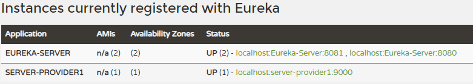
可见服务都启动成功了，我们往Server-provider1发送http://localhost:9000/hello请求，
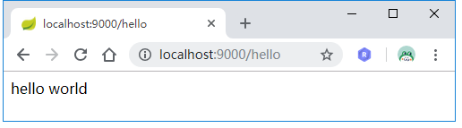
然后观察各自的日志：
Server-Provider1：
1 | 2018-06-25 10:13:40.921 INFO [server-provider1,939ca3c1d060ed40,939ca3c1d060ed40,false] 12516 --- [nio-9000-exec-6] c.e.demo.controller.HelloController : 调用server-provider1的hello接口 |
Server-Provider2：
1 | 2018-06-25 10:13:40.931 INFO [server-provider2,939ca3c1d060ed40,3f31114e88154074,false] 6500 --- [nio-9001-exec-3] c.e.demo.controller.HelloController : 调用server-provider2的hello接口 |
可以看到，日志里出现了[server-provider2,939ca3c1d060ed40,3f31114e88154074,false]信息，这些信息由Spring Cloud Sleuth生成，用于跟踪微服务请求链路。这些信息包含了4个部分的值，它们的含义如下：
server-provider2微服务的名称，与spring.application.name对应；939ca3c1d060ed40称为Trace ID，在一条完整的请求链路中，这个值是固定的。观察上面的日志即可证实这一点；3f31114e88154074称为Span ID，它表示一个基本的工作单元；false表示是否要将该信息输出到Zipkin等服务中来收集和展示，这里我们还没有集成Zipkin，所以为false。
集成Zipkin
虽然我们已经可以通过Trace ID来跟踪整体请求链路了，但是我们还是得去各个系统中捞取日志。在并发较高得时候，日志是海量的，这个时候我们可以借助Zipkin来代替我们完成日志获取与分析。Zipkin是Twitter的一个开源项目，主要包含了以下四个组件：
Collector：收集器，负责收集日志信息，以供后续的存储，分析与展示；
Storage：存储模块，我们可以通过它将日志存储到MySQL中；
RESTful API：API组件，它主要用来提供外部访问接口。 比如给客户端展示跟踪信息，或是外接系统访问以实现监控等；
WEB UI：通过web页面，我们可以轻松的分析与跟踪请求日志。
搭建Zipkin-Server
在完成Spring Cloud Cleuth与Zipkin的整合之前，我们需要搭建一个Zipkin服务。
新建一个Spring Boot应用，artifactId为Zipkin-Server，并引入如下依赖：
1 | <dependencyManagement> |
在入口类中添加@EnableZipkinServer注解，用于启动Zipkin服务。
接着在applicaiton.yml中添加如下配置：
1 | spring: |
启动项目，访问http://localhost:9100：
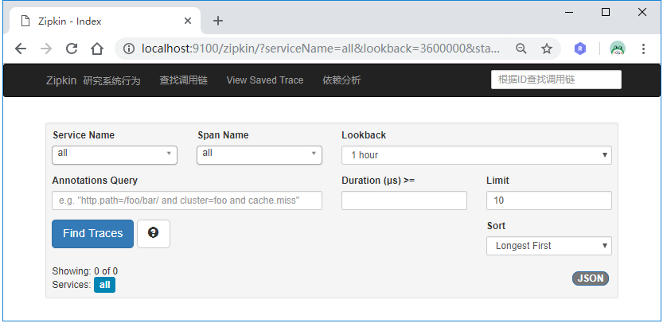
微服务引入Zipkin
接着我们需要在Server-Provider1和Server-Provider2里引入Zipkin服务。
分别在Server-Provider1和Server-Provider2里添加Zipkin相关依赖：
1 | <dependency> |
然后分别在Server-Provider1和Server-Provider2的配置文件里添加Zipkin服务地址：
1 | spring: |
至此，微服务改造完毕。
测试
启动Server-Provider1和Server-Provider2，再次往Server-Provider1发送多个http://localhost:9000/hello请求，当最后一个参数为true的时候，说明该跟踪信息会输出给Zipkin Server：
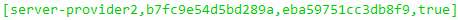
这时候访问http://localhost:9100，观察Zipkin web页面：
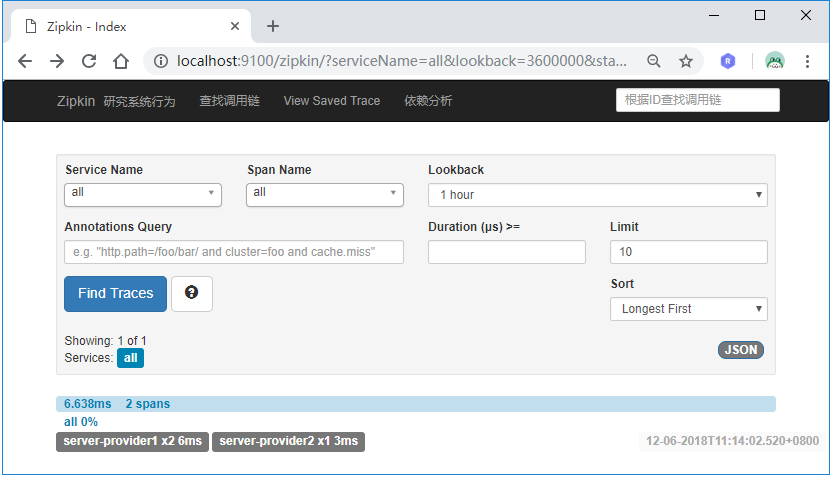
点击下方的跟踪信息，我们可以看到整个链路经过了哪些服务，总耗时等信息：
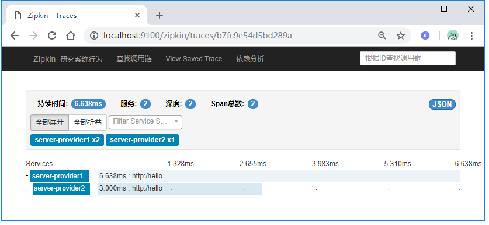
点击“依赖分析”也可以看到请求里微服务的关系：
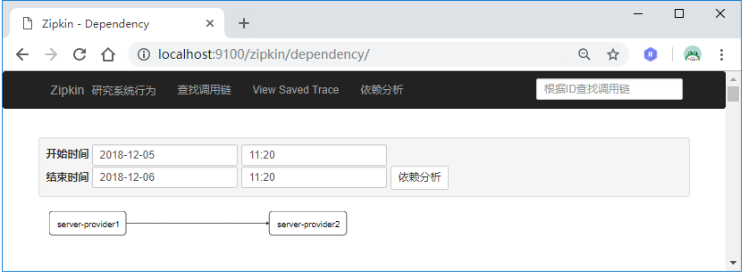
这里之所以要往Server-Provider1发送多个http://localhost:9000/hello请求是因为spring.sleuth.sampler.percentage默认值为0.1，即采样率才1/10。如果想每次请求都被采样，即每次请求跟踪信息的第四个参数都为true的话，可以将这个值设置为1。
数据存储
这些跟踪信息在Zipkin-Server服务重启后便会丢失，我们可以将这些信息存储到MySQL数据库中。
我们在Zipkin-Server中添加MySQL数据库驱动和JDBC依赖：
1 | <dependency> |
然后在application.yml中添加数据库连接信息：
1 | spring: |
配置文件中同时通过zipkin.storage.type=mysql指定了Zipkin的存储方式为MySQL。
接下来创建数据库和数据库表，新建一个名为zipkin的数据库：
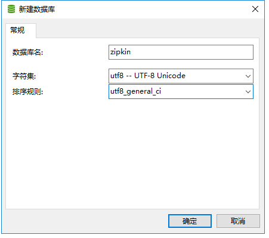
然后导入库表，库表SQL文件在io.zipkin.java:zipkin-storage-mysql:2.6.1依赖里可以找到：
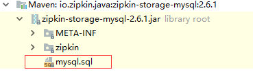
创建完后，我们重启Zipkin-Server，发送http://localhost:9000/hello请求，然后查看数据库会发现跟踪信息已经存储在库表里了：
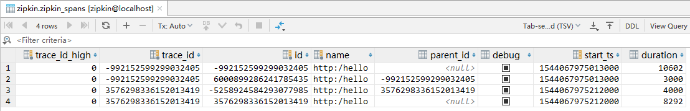
Zipkin API
正如上面所说的，Zipkin提供了RESTful API供我们调用，在启动Zipkin-Server的时候，控制台打印日志包含如下信息：
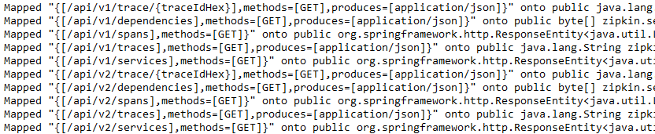
这些接口的功能如下表所示：
| 接口 | 请求方式 | 描述 |
|---|---|---|
| /trace/{traceIdHex} | GET | 根据Trace ID获取指定跟踪信息的Span列表 |
| /traces | GET | 根据指定条件查询并返回符合条件的trace清单 |
| /dependencies | GET | 用来获取通过收集到的Span分析出的依赖关系 |
| /services | GET | 用来获取服务列表 |
| /spans | GET | 根据服务名来获取所有的Span名 |
也可以参考https://zipkin.io/zipkin-api/。
源码链接：https://github.com/wuyouzhuguli/SpringAll/tree/master/43.Spring-Cloud-Sleuth。
参考文章 Spring Cloud微服务实战